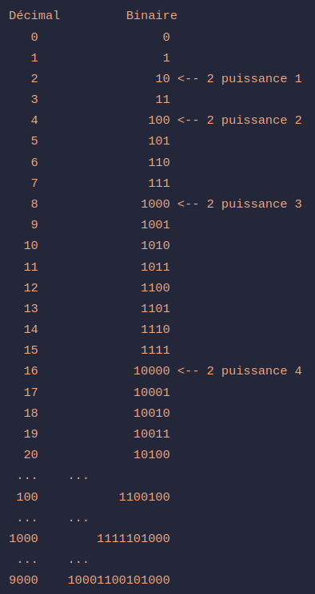
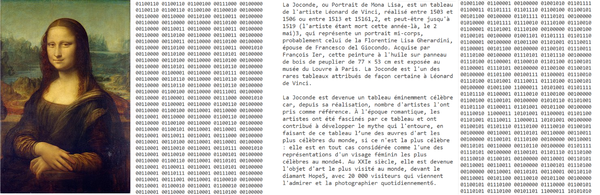
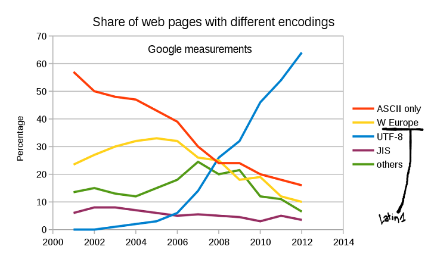

12 Des caractères à l’écran – encodage numérique
12.1 Encodage numérique
- Un fichier numérique = Une suite de bits (des 0 et des 1)
- train/flux de bits : suite de bits (binary digit)
- un octet :
- une séquence de 8 bits
- 28 (256) combinaisons possibles de 0 et de 1
- Le format : spécifie l’interprétation de cette suite de 0 et de 1
- Taille d’un fichier numérique : nombre d’instances de 0 et de 1 nécessaires à sa représentation
- Codage : norme qui définit quels sont les caractères utilisables dans un fichier. Toutes les normes ne codent pas les mêmes caractères. (- A. Perret)
12.2 Système de numération en base 2
Un ordinateur ne connaît que deux choses: les 1 et les 0. Chaque lettre dans cette phrase, chaque couleur, chaque seconde d’une vidéo ou d’un morceau de musique, chaque page web, chaque programme n’est qu’une longue succession de 1 et de 0. Mia Combeau

12.3 Mémoire
La taille d’un disque dur définit le nombre de bits disponibles pour encoder des informations simultanément. Par exemple, un disque dur de 50 Go de mémoire :
- est égal à 50 000 000 000 octets (cinquante milliards)
- est égal à 400 000 000 000 bits (quatre cents milliards)
La taille d’un fichier définit le nombre de bits nécessaire à son encodage. Par exemple, un fichier d’une taille de 30 Ko :
- nécessite 30 x 1 000 x 8 bits
- contient donc un total de 240 000 instances de 1 ou 0
12.4 0 ou 1 ?
Tout document conservé sur un ordinateur est constitué d’une série de 0 et de 1.
Ce sont les normes d’encodage et les formats qui permettent d’interpréter le sens de ces 0 et 1.

12.5 Normes d’encodage
- Normes d’encodages = clefs d’encodage/décodage pour passer d’une forme intelligible pour les humains à une forme lisible par la machine ;
- En fonction du type de fichier encodé (texte, image, vidéo, etc.), il existe différents paysages de normes et de modes de représentation
12.6 Encodage des données textuelles
Un document numérique textuel contient du texte (caractères alphanumériques et de symboles) ;
La norme d’encodage d’un texte == une table de correspondance entre un groupe de bits et un caractère alphanumérique ou un symbole ;
La norme d’encodage définit donc la liste des caractères disponibles (
character set) ;En fonction de la norme, la représentation d’un caractère peut s’étendre sur un ou plusieurs octets
Les normes les plus connues pour des textes en français sont :
- ASCII (1963)
- ISO 8859-1 (1986)
- UTF-8 (1996)
12.6.1 ASCII
- American Standard Code for Information Interchange ;
- Premier jeu de caractères standardisé (1963) ;
- Norme américano-centrée ;
- 128 caractères, desquels sont exclus :
- les caractères accentués,
- tous les alphabets non latins (arabe, cyrillique, hébreu, idéogrammes, etc.) ;
- 1 caractère = 7 bits
!"#$%&'()*+,-./
0123456789:;<=>?
@ABCDEFGHIJKLMNO
PQRSTUVWXYZ[\]^_
`abcdefghijklmno
pqrstuvwxyz{|}~Ci-dessus, seulement 95 caractères. Les autres ne sont pas imprimables (dits, caractères de contrôle) ; il correspondent plutôt à des actions ou des commandes.
Ex. :
- 9 (binaire : 000 1001) = HT (Horizontal Tab,
tab) - 10 (binaire : 000 1010) = LF (Line Feed, saut de ligne)
- 12 (binaire : 000 1100) = FF (Form Feed, saut de page)
- 127 (binaire : 111 1111) = à votre avis ?
12.6.2 ISO 8859-1
- 1986
- 1 caractères = 8 bits
- Rétrocompatibilité ASCII ;
- 256 caractères où chaque caractère est représenté par 8 bits ;
- Souvent appelée Latin1 mais aussi Western Europe.
- Manquent : Œ, œ, Ÿ, € (et les alphabts non-latins)
!"#$%&'()*+,-./ ¡¢£¤¥¦§¨©ª«¬-®¯
0123456789:;<=>? °±²³´µ¶·¸¹º»¼½¾¿
@ABCDEFGHIJKLMNO ÀÁÂÃÄÅÆÇÈÉÊËÌÍÎÏ
PQRSTUVWXYZ[\]^_ ÐÑÒÓÔÕÖ×ØÙÚÛÜÝÞß
`abcdefghijklmno àáâãäåæçèéêëìíîï
pqrstuvwxyz{|}~ ðñòóôõö÷øùúûüýþÿ- Exemple: é =
11101001
- ISO 8859-2 (Europe centrale et de l’Est),
- ISO 8859-5 (alphabet cyrillique),
- ISO 8859-6 (caractères courants de l’alphabet arabe), etc.
où seuls changent les codes 128 à 255.
12.6.3 Unicode
- Table de caractères ;
- Standard universel de représentation de caractères ;
- Contrairement à ASCII, Unicode ne définit pas l’implémentation du mapping ;
- Indique seulement quel caractère se réfère à quel point de code (où chaque point de code est un nombre hexadécimal (0-9 + A-F) représentant un caractère) ;
- Le standard Unicode lui-même ne spécifie pas comment ces points de code doivent être stockés en mémoire ou transmis dans des fichiers. C’est là qu’interviennent les encodages Unicode comme UTF-8 ;
- 1 114 112 positions possibles ;
- Divisés en scripts : collections cohérentes de caractères en usage dans un domaine particulier (symboles monétaires, opérateurs mathématiques, braille, etc).
12.6.4 UTF-8
- Méthode d’encodage
- 1996
- Universal Character Set Transformation Format + base d’encodage (8, 16, 32, …), soit UTF-8, UTF-16, UTF-32 ;
- En fonction de la base d’encodage, un caractère peut être représenté par 1, 2, 3 ou 4 octets ;
- UTF est rétrocompatible avec ASCII, mais pas avec ISO 8859-1. Il s’inscrit dans le cadre établi par Unicode qui vise à faciliter l’échange de textes numériques en assurant leur compatibilité ;
- Unicode définit plus de 137 000 caractères, issus de multiples alphabets, et prévoit aussi des symboles comme les emojis ;
- Exemples
- A = U+0041 = 01000001 ;
- 汉 = U+6C49 = 11100110 10110001 10001001 ;
- 🤓 = U+1F913 = 11110000 10011111 10100100 10010011 ;
12.7 Mauvais encodage/décodage
Si on n’utilise pas la bonne clef d’encodage ou de décodage d’un texte, on risque d’obtenir un texte partiellement ou entièrement illisible.
UTF-8 ouvert avec 8859-1 (Latin 1)
La Joconde, ou Portrait de Mona Lisa, est un tableau de l’artiste Léonard de Vinci, réalisé entre 1503 et 1506 ou entre 1513 et 15161,2, et peut-être jusqu’à 1519 (l’artiste étant mort cette année-là , le 2 mai)3, qui représente un portrait mi-corps, probablement celui de la Florentine Lisa Gherardini, épouse de Francesco del Giocondo. Acquise par François Ier, cette peinture à l’huile sur panneau de bois de peuplier de 77 à 53 cm est exposée au musée du Louvre à Paris. La Joconde est l’un des rares tableaux attribués de façon certaine à Léonard de Vinci.
UTF-8 ouvert avec ISO 8859-5 (Cyrillic)
La Joconde, ou Portrait de Mona Lisa, est un tableau de l’artiste LУЉonard de Vinci, rУЉalisУЉ entre 1503 et 1506 ou entre 1513 et 15161,2, et peut-УЊtre jusqu’У 1519 (l’artiste УЉtant mort cette annУЉe-lУ , le 2 mai)3, qui reprУЉsente un portrait mi-corps, probablement celui de la Florentine Lisa Gherardini, УЉpouse de Francesco del Giocondo. Acquise par FranУЇois Ier, cette peinture У l’huile sur panneau de bois de peuplier de 77 У 53 cm est exposУЉe au musУЉe du Louvre У Paris. La Joconde est l’un des rares tableaux attribuУЉs de faУЇon certaine У LУЉonard de Vinci.
12.8 Une norme ?
UTF s’impose désormais comme la norme

D’après W3Techs, 97,8% des pages web qui déclarent un encodage suivent UTF-8 aujourd’hui.
(source du graphique: Wikimedia)